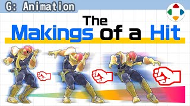
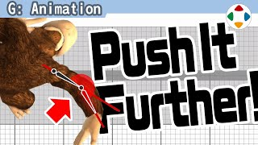

首页 / G 动画
 #14:39
#14:39动作的委托方式
Assigning Animations动作分类开篇：只讲概念，不讲依赖工具的部分。樱井委托动作设计师时：先写包含全部动作的「动作列表」（文字描述、长度、攻击发生时间）；再用手办拍照指定待机、移动、攻击等关键姿势，做成规格书，每个斗士约 70～80 张。但这只是起点：手办只是手办，还要靠设计师努力与反复监修。
 #22:57
#22:57过头才刚好
Too Much is Just Right一八的螺旋幻魔脚腰扭到模型权重都破绽了——这是好动作。做攻击动作时几乎不存在「做过头」，反倒「完全不够」是家常便饭：小画面上的小动作，要大幅做过头才刚好。初代《大乱斗》时骨骼僵硬做不好；《VR 战士》上下半身几乎反向。直线运动可以冲过头再回来一点。
 #33:35
#33:35攻击动作的拆解
Breaking Down Attack Animations樱井把攻击动作拆成四段：待机、预备（构え）、攻击、收招（Follow-Through）。待机是一切原点；预备在第 1 帧就大幅变姿势，立即显示输入被接受；攻击判定瞬间姿势要定格漂亮；收招要用满时间并设置取消帧。委托时明示四点：待机姿势、攻击姿势、攻击发生帧、总帧数。
 #42:27
#42:27预备动作要瞬时且有力
Making Lead-ins Instant and Impactful预备（构え）是按下按钮到攻击出来之间的姿势。《特别版》的蓄力打击就是在预备途中颤抖。和其他游戏不同，《大乱斗》按下瞬间姿势就大幅改变：重视响应，接受输入立即反馈。也有几乎没预备的攻击（零装萨姆斯弱攻击 1 帧出）；但预备能填补网络延迟、也带来打击的冲击力，不是越快越好。
 #53:01
#53:01攻击姿势
Attack Poses攻击动作对手感影响很大。本集只谈命中瞬间的姿势：《大乱斗》命中时有顿帧，那一刻的构图最留在脑中，所以手办规格书大多拍那一瞬。要点：整体夸张、跨过中线、避免对称、躯干别正侧、挥出一点后命中、能承受透视，最重要的是剪影漂亮。
 #64:18
#64:18收招决定冲击力
Follow-Throughs Make the Impact收招是攻击后的破绽动作，看似不重要，其实最常被看到。《大乱斗》要求响应快，预备到攻击都短；但有攻防博弈时，强攻击后要有相应破绽。普通攻击 1 秒内结束，攻击发生在总时长的 1/3～1/4，其余全是收招。所以收招要充分传达之前做了什么，并在可操作时机设置取消帧。
 #72:29
#72:29夸张以弥补信息损失
Exaggerate to Make Up for Information Loss闲聊式小话题：2002 年《钟楼惊魂 3》是深作欣二导演遗作，过场演技夸张到好笑。导演说：变成多边形的角色失去了人类的诸多信息，所以要演得更大。游戏角色本就不存在，动作捕捉也要大幅加工；角色在画面中越小越远动作越显拘谨。信息减少，就要大幅夸张。
 #83:09
#83:09摆姿势的建议
Posing Suggestions拿着可动手办「嗡——」地玩，对动作设计师是不坏的练习。姿势定格比什么都重要，实物能教你很多。以 figma 彼特为例：普通站立很平庸，调整后就利落。列出一串站姿要点：避开对称与正面、收下巴、头颈不垂直、上身腰腿不成直线、飘动物有动势、双臂不同角度、手腕不直、重心略偏、脚呈八字……最终不是理论，而是什么让人觉得好。
 #92:50
#92:50挤压与缩放
Squashing and Scaling缩放是 CG 动作三要素（缩放、旋转、平移）中最常被轻视的。弹球加上缩放，质感完全不同——这叫挤压与拉伸，要以保持质量为前提：竖压则横伸。卡比的下蹲和着地从 GB 时代起就变形，但单纯压扁会缺乏量感，所以要求按点阵图那样的量感来做。

#104:11受伤动作
Damage Animations《大乱斗》中受伤的瞬间立即换成看起来很痛的姿势；第 1 帧因顿帧而看得清，所以要做得极端、远看也明白。但不是瞬间切换，会从被击姿势稍微补间。受伤反应分上中下 × 小中大共 9 种，吹飞另有变化。体型各异难以复用；受伤动作也避免对称、重视剪影。
 #114:20
#114:20补间的陷阱
The Perils of Interpolation把 2D 游戏搬到 3D 时，同样的姿势也会丢掉 2D 的利落感：工具自动补间，中间动作被看到，显得软绵。特瑞 8 帧中踢，补间版软、成品版锋利。要点：到关键帧的路径要极端，几乎不要中间帧，时间留给预备与攻击，预备拉得比原关键帧更大。隆的升龙：原作 3 张图，《特别版》每张 1 帧一口气送。
 #122:22
#122:22表情动画
Facial AnimationsFacial 即表情。《特别版》角色小，但表情也认真做；不需要口型同步或细微变化，要整体有活力。开发中先用修图定方针，交上来的大多变化太小——狼的受伤脸这样也行，但樱井修图要求更强。觉得努力了再更大；白眼上下都露等要点很多。CG 信息少，夸张才刚好；机器人的表情也算；史蒂夫只能眨眼。
 #133:01
#133:01翻转动作
Flipped Animation两个林克面对面：一个露肚子一个露背；两个马力欧面对面：都露肚子——这是翻转动作（Flip），把姿势与动作镜像。《街头霸王 2》用点阵图左右反转，《街霸 4》多边形也照做。管理很麻烦：右直拳变左直拳、道具换手，左右不对称的持剑角色不适用。为什么做？好看：不翻转右边的人会背对镜头，表情和信息都看不到。
 #143:04
#143:04动作混合
Animation Blending动作混合是组合两个以上动作的技术。攻击后进入取消帧再操作，不会「啪」地切换，而是操作动作与取消后动作合成的姿势：待机→步行与攻击→步行，步行动作相同，开头姿势却大不相同。可指定适用度与时间，但中间动作多了会失去张弛、可能破绽，所以要迅速。在利落的《大乱斗》影响不大，3D 游戏中更有用武之地。
 #152:10
#152:10手指的表现
Portraying Fingers手持物体时容易出错：握东西自然是垂直于手，但要配合前臂挥动时应斜握。坏例子很手办感。旧时代多边形少只能将就，但用手指角度做出自然握法很重要。另一方面，手指小而复杂，处理负荷有问题时最先被削：固定、或做几种手指图案替换。省该省的，把处理用在重要处。
 #162:42
#162:42时刻意识攻击判定
Always Keep Attack Collision in Mind《大乱斗》重视侧面剪影，但开发中常有问题。前提：攻击判定不是直接贴在剑或拳的形状上，而覆盖更大范围——坐标移动激烈，判定小就打不中、压力大。现场常见：攻击范围没过中线、打不中。策划可以放判定补救，但外观与判定差太多会破绽。判定出现时机与命中姿势也重要。动作设计也要意识游戏本身。

#173:12骨骼的局限
The Limitations of SkeletonsCG 角色装上骨骼就方便动。FK（正向运动学）由根部带动末端；IK（反向运动学）拖动手的位置决定肩肘角度，编辑方便、易贴地。但关节可动极限是 180°：想让动画更有活力、弯过直线却做不到；单纯反向弯会让日常使用困难。多关节可行但有负荷与卡通感门槛，《大乱斗》未实现。别被既有便利系统框住。
 #183:27
#183:27双轴旋转
Rotation on Two Axes把头只绕 Y 轴横转，看起来很机械。旋转多用 X、Y、Z 轴表示，即使实际是绕竖轴的转动，也不要只用 Y 轴。动人时要意识双轴旋转：低头再转（X+Y）、侧倾再转（Z+Y）。手腕单轴旋转像钻头，稍倾再转就像样；还要联动肩与锁骨。两轴时机稍错开，同终点不同过程能带来不同性格；转头也要注意视线。